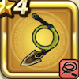

パイソンウィップ
攻略班 5.0点 / スパークショットらせん打ちしばり打ち
くわしい特徴
【レベル別習得スキル】 Lv1スパークショット（消費MP：5）敵1体に威力120%のイオ属性体技ダメージを与えたまに幻でつつみこむ Lv8らせん打ち（消費MP：9）らせん状に打ち敵1体を威力180%の体技ダメージを与えたまに混乱させる Lv20しばり打ち（消費MP：9）敵をムチでしばり敵1体に威力180%の体技ダメージを与えたまに麻痺させる Lv28植物系へのダメージ+10% Lv36攻撃時+2%の確率で毒を与える Lv40攻撃力+8 【限界突破スキル】 1凸スキルの斬撃・体技ダメージ+5% 2凸スキルの斬撃・体技ダメージ+5% 3凸スキルの斬撃・体技ダメージ+5% 4凸スキルの斬撃・体技ダメージ+5%